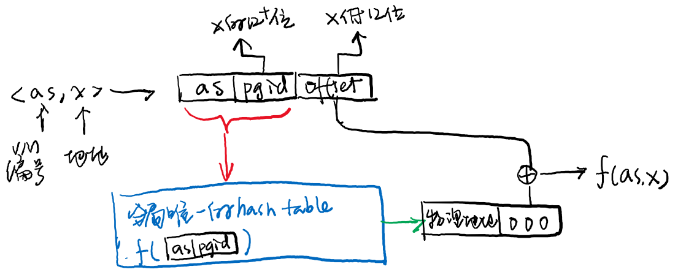
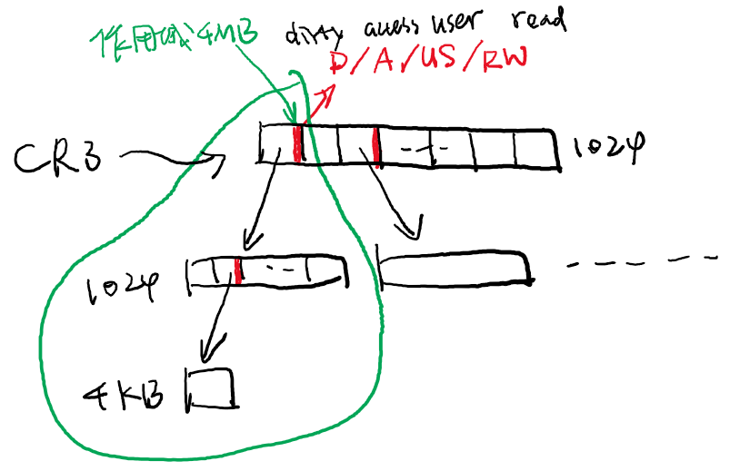
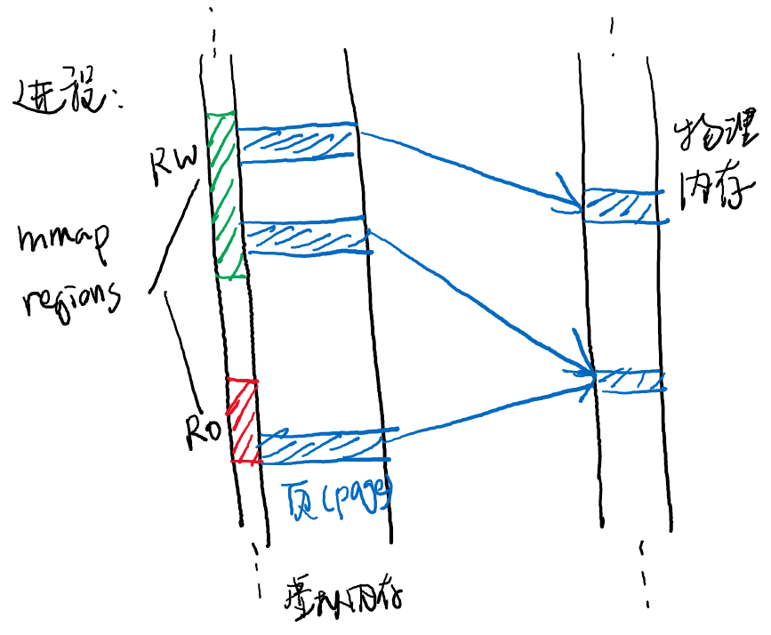
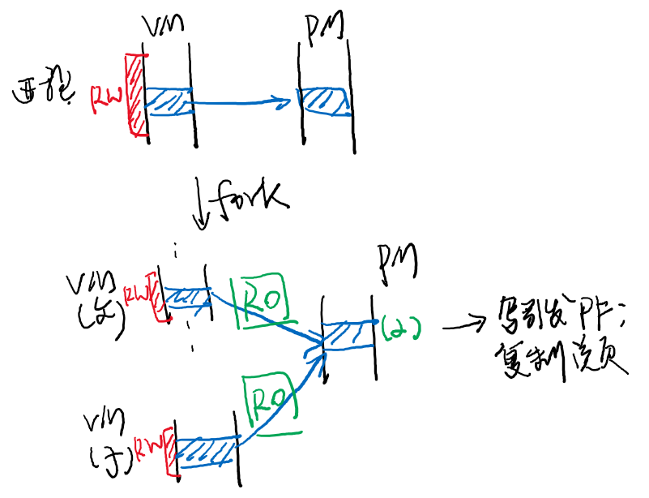

public: True class: center, middle # 虚拟化：虚存抽象 蒋炎岩 <jyy@nju.edu.cn> 南京大学计算机软件研究所 --- # 本讲概述 > 虚拟化：让每个进程貌似“独占”一个虚拟计算机。进程的状态：<math>(M,R)</math> > > * 虚拟CPU：中断驱动的上下文(<math>R</math>)切换 > * 虚拟内存：实现<math>M</math>的轻量级切换 ---- * 虚拟存储：原理与硬件实现 * 虚拟存储：操作系统支持 * 进程的地址空间 --- class: center, middle # 虚拟存储：原理与硬件实现 --- # 虚拟存储 是一个函数 <math>f(x) \in [0,M)</math> * 把地址空间中的任何一个地址映射到另一个地址 * 任何指令访问地址 <math>x</math> (包括取指令)，经过地址翻译后访问 <math>f(x)</math> * 访问未映射的页面 <math>f(x)=\bot</math> 将会触发异常 (Segmentation Fault) -- count: false ---- > 难题：.green[如何高效地在硬件上实现<math>f</math>]？ > > * 支持<math>f</math>在运行时的动态修改(mmap, munmap) > * 需要非常省内存：<math>f</math> 的存储开销必须远小于实际使用的内存 > * 需要算得非常快：每次访问内存都要计算<math>f(x)</math> --- # 很简单：“分块” 只允许地址空间映射足够大的.red[连续]内存，并且可以设置访问权限 * 段 (segment)：仅允许几段连续的虚拟内存；<math>O(S)</math>开销 * x86: GDT, LDT描述“段”的内存映射 * 页 (page)：可以以页为单位自由映射；<math>O(M/p)</math>开销 * x86: “页目录-页表”数据结构描述内存映射 * 内存越大，页表层数越多：PML4 (48bit) ---- * 复习：名词解释 * 多级页表；反置页表；TLB (Translation Lookaside Buffer) --- # Inverted Page Table 我们实际希望的是在系统中创造多个地址空间<math>as</math>，并且维护<math>f_{as}(x)</math> * 我们不如让硬件维护一个全局的hash table，计算<math>f(as, x)</math> <center></center> --- # Funny Facts <math>f(x)</math>实际是一个数据结构 * IPT支持的操作并不如PML多 * 稍后实现Copy-on-Write会遇到困难 * PML能高效地标记一段连续内存为某个权限 (how?) <center></center> --- class: center, middle # 虚拟存储：操作系统支持 --- # 一个API解决所有问题 操作系统应该如何为进程提供虚拟内存管理？操作系统需要.green[提供机制]实现： * `dlopen`，把动态链接库文件加载到地址空间 * `malloc/free`，内存管理 * …… -- count: false ---- 因为*Everything is a File*，所以只要能把操作系统里的对象“映射”到进程地址空间，就足够了！ ```c void *mmap(void *addr, size_t length, int prot, int flags, int fd, off_t offset); // 映射 int mprotect(void *addr, size_t length, int prot); // 修改映射权限 ``` --- # 把文件映射到进程地址空间 <center><img src="../static/wiki/os/2019/img/mmap.png" width="650px"></center> --- # Everything is a File 所以可以把任何东西映射进地址空间 * 不映射任何文件(`fd=-1`, `MAP_ANONYMOUS`)，等同于内存分配 (`mmap`可以直接分配几十GB的内存：[mmap-demo.c](/static/wiki/os/2019/demos/mmap-demo.c)；用户空间的内存分配是基于mmap实现的) * 可以映射任何支持mmap的文件/设备 * 思考题：.green[为什么ELF文件中间有那么多“空白”]？ * 可以以各种权限(`PROT_READ`, `PROT_WRITE`, `PROT_EXEC`)映射 * 操作系统会管理好一切(偶尔你需要`msync (2)`) --- # mmap的实现：访问时分配 为什么内存分配这么快？(64GB内存，瞬间就分配好了) * 是因为mmap并不需要真的映射 * 操作系统只需要记下这一次mmap操作，并将页面标记为“不存在” * quick quiz: .green[用什么数据结构维护mmap regions]？注意：映射区域可能生长/合并(例如分配内存) * 缺页时操作系统就“知道”该给这个页面填入什么值 * 找到映射的文件 * 如果没有文件，直接返回一个全0的页面 * 如果有文件，从文件处读取数值 * msync或页面回收时写回文件 --- # Demand Paging 因为内存不需要真的映射(只需要知道mmap的区域信息) * 我们允许进程使用的内存大于物理内存 * 只要有一个大容量的设备，在物理内存紧缺时，swap out一些不常用的物理页(思考题：.green[换出哪一页？]) * 缺页时再从设备换回 --- # mmap的实现 (cont'd) <center></center> --- # fork: 写时复制 fork并不需要复制完整的<math>M</math> * 让父子进程只读共享所有页面；写时复制一份 <center></center> --- class: center, middle # 进程的地址空间 --- # 指针 “指针”一直是让程序员非常头疼的概念 * 它本质上就是个.red[整数] * 在指针背后，实际是进程的“地址空间” ---- ```c uintptr_t value; *(char *)value // ... ``` * `value = 0` -> Segmentation Fault * 代码：只读、可执行 * 数据/堆栈：可读、可写、不可执行 --- # 查看进程地址空间 pmap (1) - report memory of a process: * 演示：静态链接/动态链接的a.out * 思考题：.green[pmap是如何实现的]？.green[如何知道pmap是如何实现的]？ -- count: false ---- ```text 0000000000400000 728K r-x-- a.out 00000000006b6000 24K rw--- a.out 00000000006bc000 4K rw--- [ anon ] 00000000023f2000 140K rw--- [ anon ] 00007ffe87e99000 132K rw--- [ stack ] 00007ffe87f6b000 12K r---- [ anon ] 00007ffe87f6e000 8K r-x-- [ anon ] ffffffffff600000 4K r-x-- [ anon ] ``` ---- 这就是我们看到进程“地址空间”的全部：.red[若干连续的区域] * `/proc/[pid]/maps`有更详细的信息 --- # 静态链接程序的地址空间 ```text 00400000-004b6000 r-xp /tmp/a.out (代码) 006b6000-006bc000 rw-p /tmp/a.out (数据) 006bc000-006bd000 rw-p <-- 这是啥(#1) 0131f000-01342000 rw-p [heap] 7fff993c9000-7fff993ea000 rw-p [stack] 7fff993f4000-7fff993f7000 r--p [vvar] <-- 这是啥(#2) 7fff993f7000-7fff993f9000 r-xp [vdso] <-- 这是啥(#3) ffffffffff600000-ffffffffff601000 r-xp [vsyscall] <-- 这是啥(#4) ``` 猜测(#1)：bss (思考题：.green[怎样验证？]) -- count: false ---- ```c extern char end; printf("bss ends at %lx\n", (uintptr_t)&end); ``` --- # 静态链接程序的地址空间 (#2) vsyscall: 用户空间的系统调用 * 开玩笑的吧？ -- count: false ---- Virtual System Call: 系统调用，但不需要`int $0x80`/`sysenter` * gettimeofday/time * getcpu 以上系统调用可以在.red[只读内核数据]的基础上实现 * 时间：内核维护中断时的时间，用户程序加上rdtsc的结果 * getcpu：为每个CPU上的进程映射不同的页面 --- # 静态链接程序的地址空间 (#3, #4) vvar, vdso: 加强版用户空间系统调用 * vvar: 3 pages (ro, 内核数据); vdso: 2 pages (rx, 统调用代码) * 基本等于vsyscall * 注意到它们的地址是紧接着堆栈的 (随机值) --- # (番外) 让系统调用不陷入内核 > L.Soares and M. Stumm. FlexSC: Flexible system call scheduling with exception-less system calls. In *Proc. of OSDI*, 2010. 类似vsyscall，核心想法：.red[让内核和用户共享内存] * 用户进程准备好参数后，设置`flag = 1` * 内核直接取走执行(spinning) * 同样用内存通知用户进程结束 --- # 动态链接程序的地址空间 动态链接库同样有代码、数据、bss，还有“空洞” ```text 7fdfe2e15000-7fdfe2ffc000 r-xp libc-2.27.so 7fdfe2ffc000-7fdfe31fc000 ---p libc-2.27.so // Gap (?) 7fdfe31fc000-7fdfe3200000 r--p libc-2.27.so 7fdfe3200000-7fdfe3202000 rw-p libc-2.27.so 7fdfe3202000-7fdfe3206000 rw-p [anon] 7fdfe3206000-7fdfe322d000 r-xp ld-2.27.so 7fdfe33f2000-7fdfe3416000 rw-p [anon] 7fdfe342d000-7fdfe342e000 r--p ld-2.27.so 7fdfe342e000-7fdfe342f000 rw-p ld-2.27.so ``` 它们是怎么加载的呢？上次助教已经讲过了…… --- # (番外) 调试代码 .green[如何知道`int main() {}`的链接/加载过程]？ -- count: false ---- ```text $ ldd ./a.out linux-vdso.so.1 (0x00007ffdd1165000) libc.so.6 => /lib/x86_64-linux-gnu/libc.so.6 (0x00007ffa2f6fe000) /lib64/ld-linux-x86-64.so.2 (0x00007ffa2fcf1000) ``` 调试第一条指令： ```text $ echo starti | gdb ./a.out 0x00007ffff7dd6090 in _start () from /lib64/ld-linux-x86-64.so.2 ``` 观察系统调用序列： ```text $ strace ./a.out ``` --- # Wanna Some Fun? 实现“游戏外挂程序” ([mem-probe.c](/static/wiki/os/2019/demos/mem-probe.c)) * 这是一个简单版的“内挂”——修改自己进程的地址空间 * 根据pmap的结果，读/写地址空间中的内存 * 其他进程的内存可以通过`/proc/[pid]/mem`访问，原理类似 .center[<img src="../static/wiki/os/2018/img/kingpal.jpg" width="400px"/>] --- # ASLR 思考题：.green[为什么每次运行同一个程序，地址都不一样？] * `cat /proc/self/maps` 每次地址都有细微变化 (但vsyscall不变) * 但“大致”又都是一样的，为什么？ -- count: false ---- Address Space Layout Randomization * 让代码处于“随机”的位置 * 降低黑客获得权限(如缓冲区溢出)后实现攻击的可能 * vsyscall因为不靠谱，已被vdso取代